40 스마트 블라인드 컨트롤러
40.1 설치 - 기본
질문 1: 스마트 스마트 블라인드 컨트롤러의 설치 방법을 알 수 있을까요?
답변 1:
스마트 블라인드 컨트롤러의 설치 영상과 매뉴얼은 아래 링크를 클릭하시면 보실 수 있습니다.
질문 2: 스마트 블라인드 컨트롤러를 주문할 때 길이 선택 옵션이 없던데 단일 상품인가요?
답변 2:
해당 제품은 단일 제품으로 모터제품만 포함되어 있습니다. 블라인드 레일 및 패키지가 필요하시다면, 패키지 제품을 통해 구매 하실 수 있습니다.
질문 3: 블라인드 리모컨 렌포트 규격이 어떻게 되나요?
답변 3:
블라인드 리모컨 렌포트 규격은 RJ11 입니다.
질문 4: 커튼 박스가 10센치인데 롤 스크린 설치가 어려울까요?
답변 4:
레일 1개설치 최소 15cm 이상 레일 2개설치 최소 25cm 이상 추천드립니다. 10cm는 간섭이 생겨 설치가 어렵습니다
질문 5: Aqara 아카라 스마트 IoT 전동 롤스크린 암막 블라인드 패키지에 사용되는 모터는 어떤것인가요?
답변 5:
스마트 IoT 전동 블라인드 - 스마트폰으로 간편하게 조작 | 아카라 스마트홈 : 아카라라이프 (naver.com) 해당 링크에 있는 모터 이용해주시면 됩니다.
질문 6: 창문이 있는 벽면의 총 길이는 430cm 정도이고 현재 일반 롤러 블라인드가 각각 폭 110cm, 190cm, 110cm 연달아 설치 돼 있습니다. 아카라 전동 블라인드로 전부 교체한다면 동일 사이즈로 구매해도 될까요?
답변 6:
네,동일 사이즈로 구매하셔도 무방합니다.
질문 7: 위와 같이 아카라 전동블라인드를 3개 구매하려고 하는데 전원선은 모두 오른쪽으로 한개의 콘센트에 쓰려고 합니다.(콘센트 높이는 바닥에서 20cm정도) 바닥부터 천장 높이는 240cm~250cm정도 됩니다. 이럴 경우 3개 모두 전원 연장선이 필요한가요? 맨 왼쪽 블라인드만 필요한가요?
답변 7:
우측 콘센트 1개에 모두 조인해서 사용이 가능합니다. 이럴 경우 전원연장선 2개 추가로 필요하십니다.
질문 8: 기사분 방문 설치를 하려고 합니다. 전동 블라인드 3가지를 구매하기 위해 각각 상품 하나씩 장바구니에 담아 따로 구매하라고 돼 있는데 방문기사 설치 비용도 1개씩 따로 지불해야하나요? 아니면 3개중 한 상품에서 3레일 설치 비용 하나만 추가하면 되나요?
답변 8:
각각 구매를 하시되, 한 주문건에 대해서만 설치비용: 3개 구매해주시면 됩니다
질문 9: 추후에 블라인드 살만 다시 교체할 수 있나요?
답변 9:
원단교체를 위해서는 블라인드 전체를 다시 공장에 보내야 교체가 가능합니다. 관련하여 더 궁금하신 점 있으시면 온앤오프쉐이드 1688-1756으로 문의 부탁 드립니다.
질문 10: 블라인드 컨트롤러를 주문할 때 길이 선택 옵션이 없던데 단일 상품인가요?
답변 10:
블라인드 레일 및 패키지 구매가 필요하시다면, 패키지 제품을 통해 구매하실 수 있습니다.
질문 11: 허브없이도 블라인드 컨트롤러를 스마트씽즈에서 사용가능하나요?
답변 11:
해당 블라인드 컨트롤러 사용하기 위해서는 허브가 필수입니다. (허브가 없어도 소프트 터치로 반자동 개폐는 가능합니다). 단, 스마트 씽즈 연동은 아카라의 허브없이 가능하며, 삼성 스마트씽즈를 통해 블라인드 컨틀롤러를 자유롭게 사용하실 수 있습니다.
질문 12: 블라인드 컨트롤러를 사무실에 여러개 설치 했는데, 스마트 씽즈에서 그룹 제어가 가능한지요?
답변 12:
현재 스마트씽즈에서는 그룹제어 기능이 지원되지 않습니다.
질문 13: 스마트 전동 롤스크린 블라인드 패키지 구매에 관심이 있습니다. 어떤 색상의 롤 블라인드가 있는지요?
답변 13:
다음과 같은 롤 블라인드 색상을 선택하실 수 있습니다.
(1) 일반 롤 스크린: 빛 차단율 60% 이상, 폴리에스터 100%, 항균도 99%, 방염원단
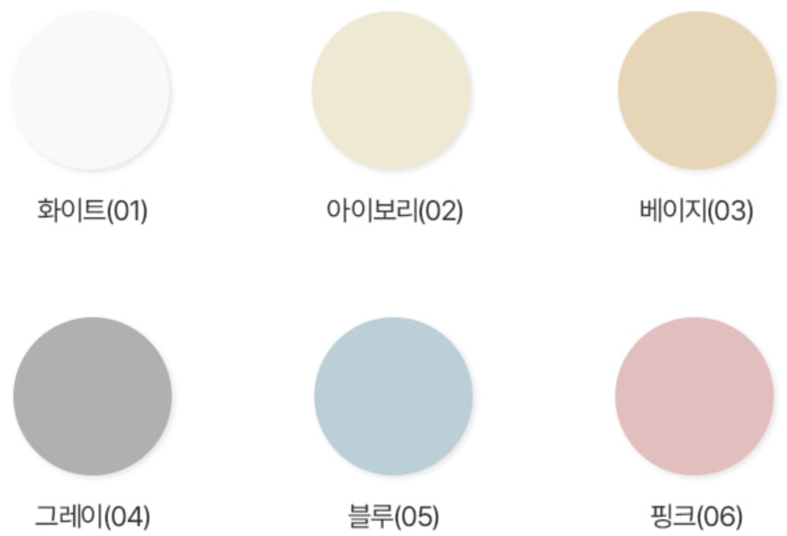
(2) 양면 암막: 빛 차단율 99% 이상, 폴리에스터 100%, 항균도 99%, 방염 원단
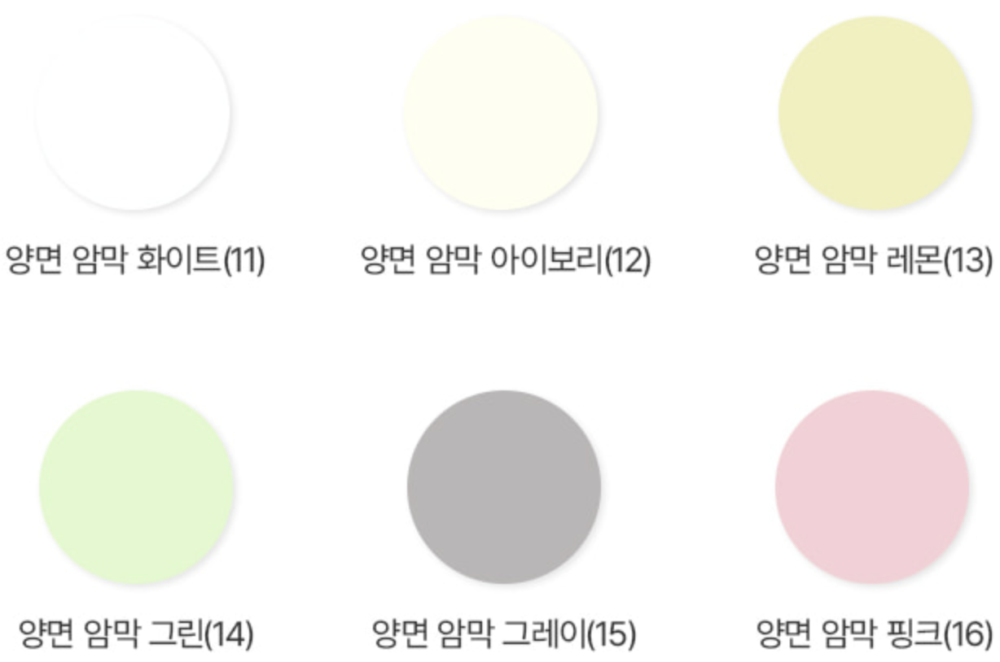
모니터 환경에 따라 원단 색상과 질감은 차이가 있을 수 있습니다.
원단 색상이 진할 수록 암막 효과가 높아집니다.
주문한 가로 사이즈는 상단 프레임을 기준으로 제작됩니다. 원단 사이즈는 주문한 가로 사이즈보다 1cm~2cm 정도 자게 제작되며, 2개 이상 연창으로 설치 시 중간 부분에 2 ~ 3cm 정도 틈이 생깁니다.
질문 15: 스마트 전동 우드 블라인드 패키지 구매에 관심이 있습니다. 어떤 색상의 우드 블라인드를 선택할 수 있는지요?
답변 15:
다음과 같은 우드블라인드 색상을 선택하실 수 있습니다. 참고로, 재질은 라운드형 오동나무이며 상단프레임은 알루미늄입니다.
- 우드 슬랫마다 사이즈, 색상, 나뭇결에 약간의 차이가 있을 수 있습니다.
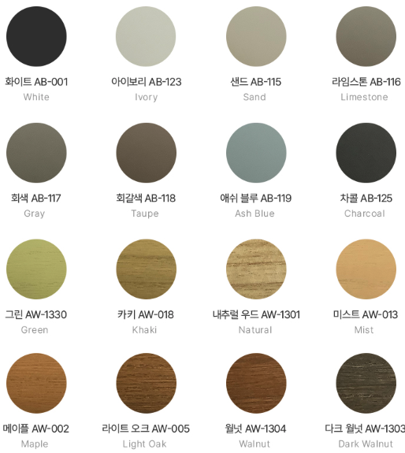
질문 14: 스마트 전동 롤스크린 (또는 우드) 블라인드 패키지 구매에 관심이 있습니다. 구성품은 어떻게 구성되어 있는지요?
답변 14:
스마트 전동 롤스크린 (또는 우드) 블라인드 패키지는 다음과 구성품이 포함 되어 있습니다.
스마트 롤스크린 (또는 우드) 블라인드 컨트롤러는 블라인드 상단부 프레임에 장착되어 있습니다.
모터 전원선의 기본 길이는 약 1m입니다.
설치 환경에 따라 점퍼를 위한 전기선 또는 200V 전원 코드선이 필요할 수 있습니다.
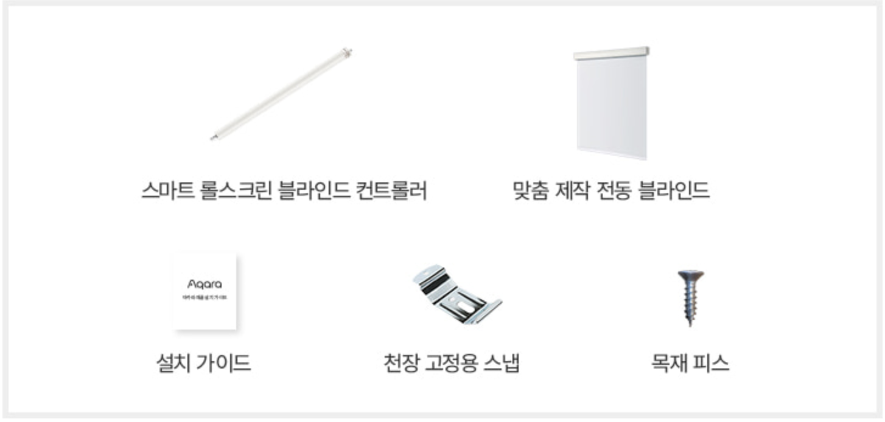
질문 15: 스마트 전동 롤스크린 (또는 우드) 블라인드 패키지 구매에 관심이 있습니다. 설치 벽면이 목재가 아닌데 필요한 부자재가 무엇이 있을까요?
답변 15:
설치 벽면의 재질에 따라 다음과 같은 부자재가 필요합니다.
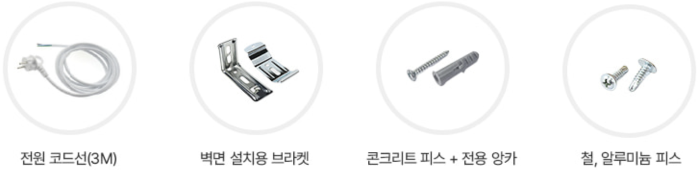
질문 16: 블라인드 컨트롤러는 최대 몇 kg하중까지 사용할 수 있는지요?
답변 16:
아카라 블라인드 컨트롤러의 사용가능한 최대 하중은 30kg입니다.
40.2 설치 - 실무 가이드 (롤스크린 블라인드 설치 기준)
40.2.1 주의 사항
본 제품을 설치하는 과정에서 강한 전류가 필요하기 때문에 전문 커튼/블라인드 업체를 통해 설치하셔야 합니다. 제품 설치 시에는 반드시 주 전원 스위치를 끈 상태로 설치하시기 바랍니다.
본 제품은 실내 전용 제품으로 설계되었으므로 실외나 습한 환경에서 사용하지 마시기 바랍니다.
본 제품에 물 또는 액체를 엎지르는 경우 고장, 감전 및 화재의 위험이 있습니다.
본 제품을 열원 부근에 설치하지 마십시오.
본 제품을 임의로 분해, 수리, 개조하지 마십시오. 수리가 필요한 경우 support@aqara.kr로 연락하십시오.
40.2.2 구성품
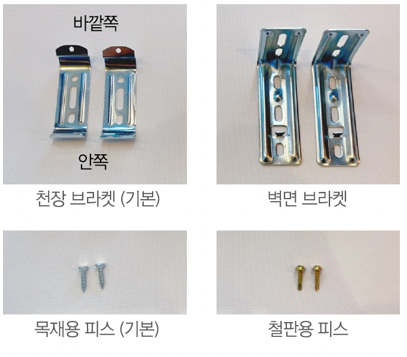
참고 사항
천장에 설치하는 경우, 천장 브라켓만 필요합니다.
벽면에 설치하는 경우, 천장 브라켓과 벽면 브라켓이 모두 필요합니다.
천장 재질에 따라 사용되는 피스가 달라지며, 일반적인 목재용 피스를 사용합니다.
40.2.3 커튼 박스 사이즈
커튼 박스의 최소 사이즈를 확인하여 블라인드 상단 프레임 설치가 가능한지 확인해 주세요.
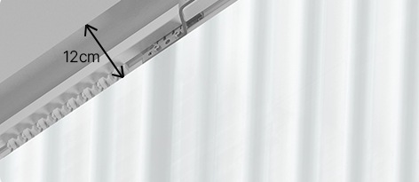
최소 12cm 이상의 공간이 필요합닌다.
(원활한 설치를 위해 15cm 이상의 공간 확보 권장)
설치 주의: 10cm
설치 불가: 7cm, 제품상 하자가 발생할 수 있으므로 권장하지 않습니다.
최소 사이즈는 아카라 전통 커튼 패키지의 사용성 및 우아한 연출을 극대화하기 위해 책정한 사이즈입니다. 설치 주의 구간 사이즈에 해당하는 경우 레일 설치는 가능하나, 원단 간 간섭등 사용상의 불편함이 발생할 수 있습니다.
40.2.4 블라인드 세로 사이즈
일반 창문의 경우
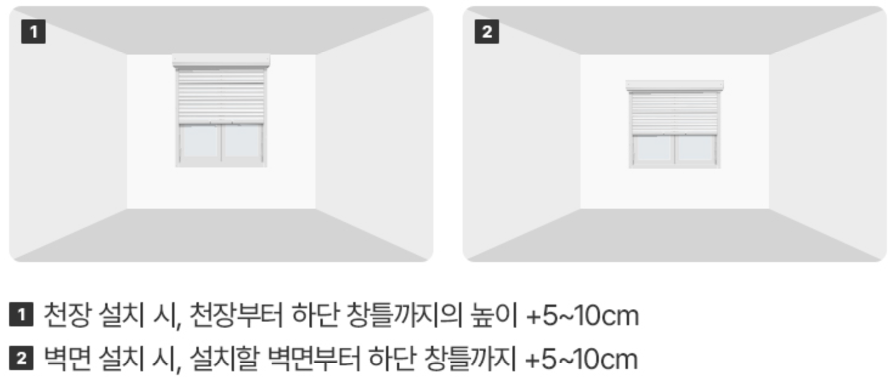
통유리 창문인 경우
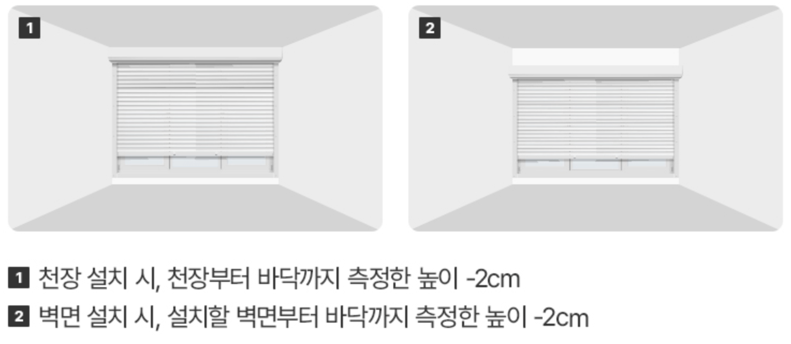
40.3 블라인드 가로 사이즈
블라인드 가로 사이즈는 상부 프레임 사이즈를 기준으로 제작됩니다.
1개 주문시
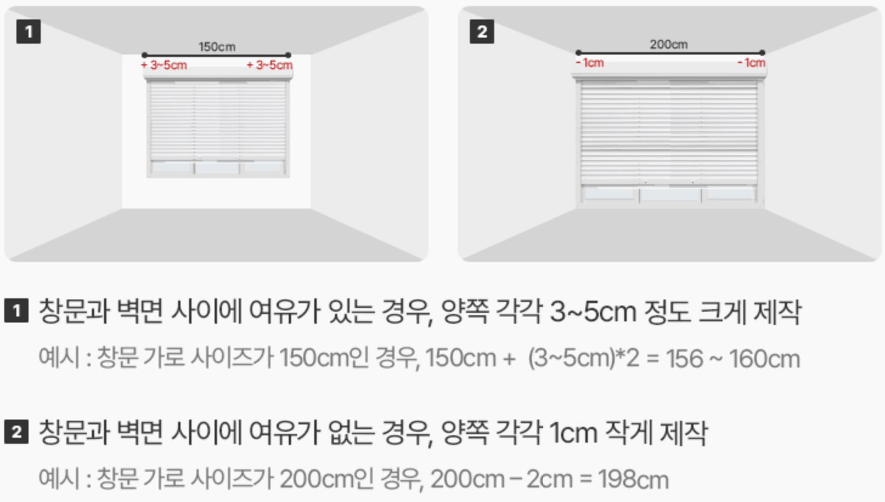
2개 주문시 (창문 사이즈가 동일할 경우 같은 사이즈 블라인드를 2개 주문 하십시오)
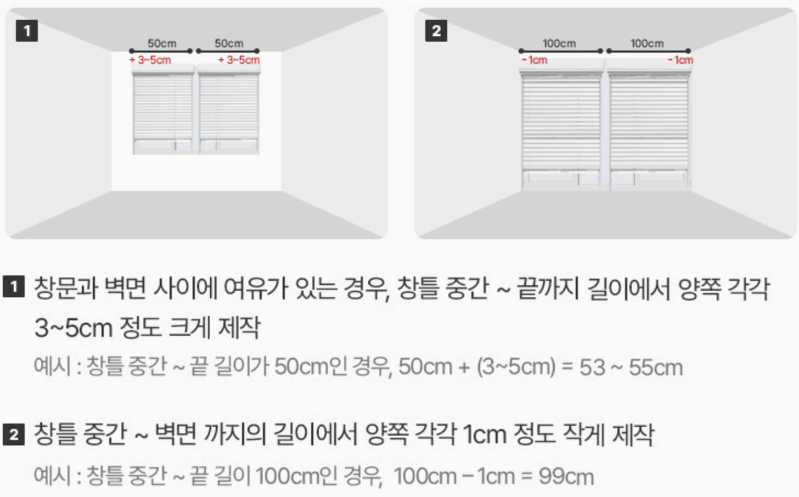
3개 연창 주문시
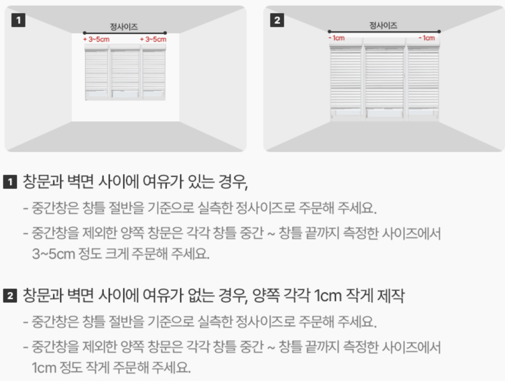
40.3.1 천장 설치 방법
(1) 블라인드 길이에 따라 2-3개의 브라켓을 고정시킬 위치를 표시하세요.
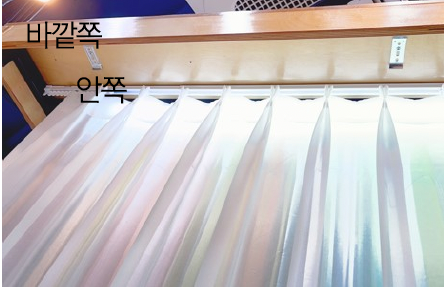
(2) 브라켓 끝에 구멍이 있는 쪽이 바깥쪽을 향하도록 위치한 후, 피스로 고정시켜 주세요. 피스는 브라켓의 정 가운데를 고정시키는 것을 추천드립니다.
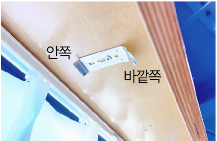
(3) 안쪽 부분을 브라켓 홈에 먼저 걸친 후, 딸깍 소리가 나도록 반대 편을 장착합니다.
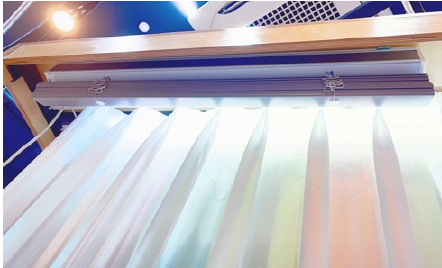
40.3.2 벽면 설치 방법
(1) 블라인드 길이에 따라 2-3개의 브라켓을 준비하고, 브라켓을 고정시킬 위치를 표시하세요.
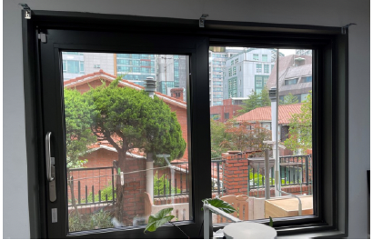
(2) 벽면 브라켓의 길이가 짧은 부분이 벽면에 위치하도록 ’ㄱ’자 모양으로 위치를 잡은 후, 위쪽 구멍 중앙에 피스로 고정시켜 주세요.
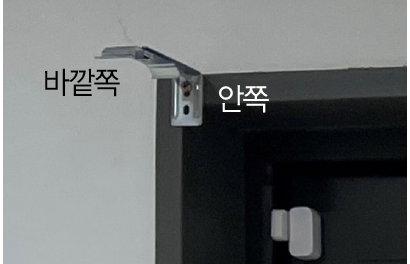
(3) 천장 브라켓을 ‘+’ 모양으로 위치한 후 시계 방향으로 돌려 ‘일자’ 모양이 되도록 고정해 주세요.
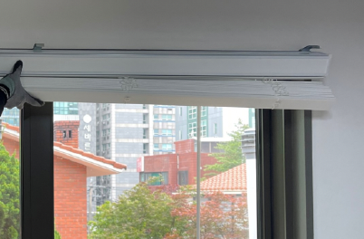
(4) 블라인드를 브라켓의 안쪽 부분에 먼저 걸친 후, 딸깍 소리가 나도록 반대편을 장착합니다.
40.3.3 천장 브라켓을 벽면 브라켓에 고정시키는 방법
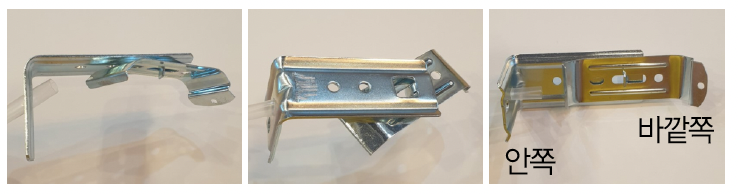
설치 방법: 천장 브라켓을 벽면 브라켓에 ‘+’ 모양으로 위치시킨 후, 시계 방향으로 돌려 ‘일자’ 모양이 되도록 고정해 주세요.
조립 방향: 천장 브라켓의 끝에 구멍이 있는 쪽이 바깥쪽을 향해야 합니다.
40.3.4 컨트롤 박스 연결하기 & 부착하기
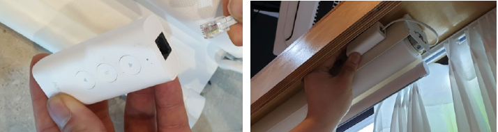
40.3.5 앱 초기 설정
(1) Aqara Home앱에 스마트 블라인드 컨트롤러를 추가 한 후 실행하면, 다음과 같은 화면이 보입니다. 먼저 롤업/롤다운 버튼을 클릭하여 방향이 맞는 지 확인하세요. 그리고, 우측 상단 ‘…’ 설정탭을 클릭합니다.
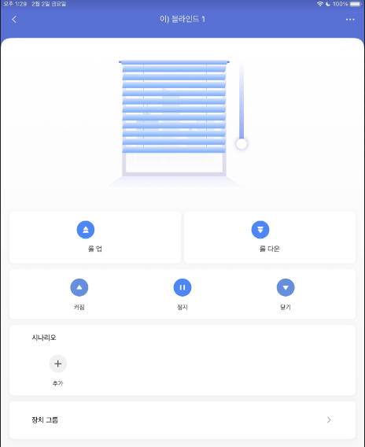
(2) 메뉴에서 “기기 설정” 을 클릭하시면 다음과 같은 “기기 설정” 윈도우를 보실 수 있습니다.
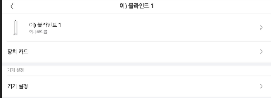
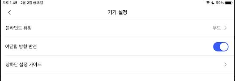
블라인드 유형: 롤 / 콤비 / 우드 / 트리플
여닫음 방향 반전: 열고 닫는 방향 바꾸기
상하단 설정 가이드: (3) 번 참조
(3) 상하단 설정 가이드
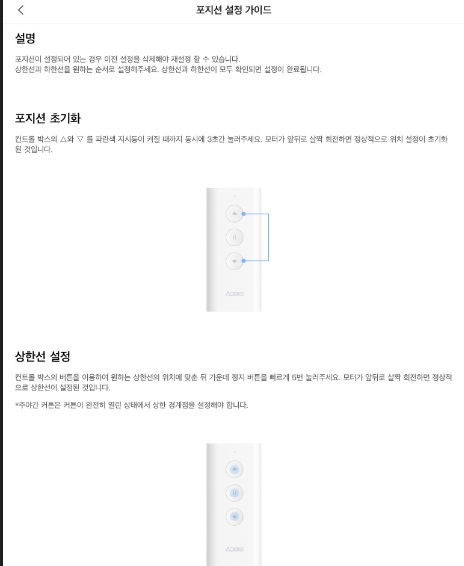
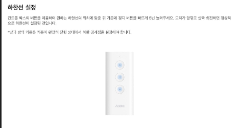
40.4 설치 - 동영상 (우드 전동 블라인드 DIY)
- 본 동영상은 아카라라이프에서 제작한 동영상이 아닙니다.
(1) 전동 모터 셋팅하기
(2) 수동 블라인드 해체
(3) 본 조립 및 완성
(4) 아카라앱 리미티드 설정 방법
(5) 팉팅 및 슬랫 문제 발생 시 해결 방법
40.5 사용팁
질문 1: 스마트 블라인드 컨트롤러는 스마트 씽즈와 연동이 되는지요?
답변 1:
네, 스마트 블라인드 컨트롤러는 스마트 씽즈와 공식 연동이 됩니다.
질문 2: 스마트 블라인드 컨트롤러를 삼성 스마트 씽즈와 연동하려고 합니다. 큐브 T1 Pro를 통해 블라인드 컨트롤러를 그룹 제어 할 수 있는지 궁금합니다. 총 7개 블라인드를 3개/2개/2개로 그룹 제어를 하고 싶습니다. 단일 제어 및 그룹제어가 모두 가능한지요?
답변 2:
큐브를 통해 스마트 블라인드 컨트롤러 열기/닫기 제어는 당연히 가능합니다. 다만, 현재 스마트 씽즈에서 그룹제어 기능이 지원되지 않스비다. 문의 주신 내용으로 자동화를 만들 경우, 다음과 같이 실행결과를 각 커튼별로 설정하여 만드실 수 있습니다.
- 실행 결과: (1) 커튼 A 열기 (2) 커튼B 열기 (3) 커튼 C 열기
질문 3: 큐브 T1 Pro을 이용해서 블라인드 컨트롤러 (우드 블라인드 사용)의 틸팅을 조정하고 싶은데 어떤 메뉴에서 그 설정을 할 수 있는지 요?
답변 3:
틸팅은 자동화 설정에서만 설정하실 수 있습니다. 다음과 같이 “아래쪽 향하기” 또는 “위쪽 향하기” 를 실행결과에 설정할 수 있습니다.
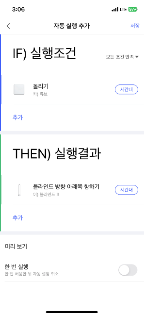
질문 4: 블라인드 컨트롤러는 최대 몇 kg하중까지 사용할 수 있는지요?
답변 4:
아카라 블라인드 컨트롤러의 사용가능한 최대 하중은 30kg입니다.
질문 5: 블라인드 컨트롤러는 어떻게 초기화 시키는지요?
답변 5:
파란색 지시등이 깜빡거릴 때까지 5초간 리셋버튼을 눌러다가 놓으세요.
질문 5: 블라인드 컨트롤러로 슬릿 각도 조절이 가능한 블라인드는 무엇인가요?
답변 5:
우드 블라인드의 경우 슬릿 각도 조절이 가능합니다.
40.6 Troubleshoot
질문 1: 블라인드 컨트롤러의 전원이 꺼져 있을 때 블라인드를 내리고 올릴 수 있나요?
답변 1:
블라인드 컨트롤러의 전원이 꺼져 있을 때 수동으로 내리고 올릴 수 없습니다.
질문 2: 블라인드 컨트롤러를 올리면 내려가고, 내리면 올라가는데 조정할 방법이 있을 까요?
답변 2:
블라인드 메인 화면에서 우측 …를 클릭하여 기기 설정 >> 여닫힘 방향 반전 옵션을 켜시면 반향이 반전됩니다.
질문 3: 블라인드 컨트롤러을 일정 시간 동안 계속해서 작동시키면 더 이상 동작되지 않는 경우가 있는데 어떻게 해야 하나요?
답변 3:
블라인드 컨트롤러가 연속적으로 약 4분 동안 작동하면, 과열 보호 상태로 전환되어 작동을 중지합니다. 온도가 적절한 수준으로 돌아오면 정상적으로 작동합니다(약 10~30분 정도 소요됩니다).
질문 4: 블라인드 컨트롤러가 아카라앱에 설치되어 있는데도 아카라앱의 메인 화면에 제어 버튼이 표시되지 않는지요?
답변 4:
블라인드 컨트롤러의 경로가 완전히 설정되지 않은 경우, 앱을 통해 블라인드 컨트롤러를 제어할 수 없으며, 앱의 메인화면에는 제어 버튼이 표시되지 않습니다. 상하단 설정 가이드에 따라 경로 설정을 완료한 후에 앱을 통해 제어할 수 있습니다.